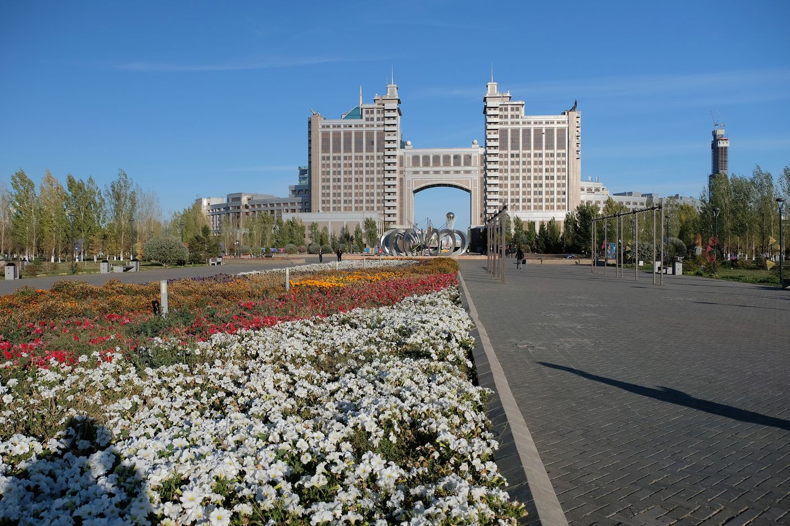

A Higher Oil Price, Less Oil: KazMunayGas in 2025-2026
Net profit rose 69% in the first half of 2026 as Brent averaged $92, while oil output fell 4.6%.


Summary
KazMunayGas (KMG), Kazakhstan's national oil and gas company, produced 26.2 million tonnes of oil and condensate in 2025, 10% more than in 2024. Revenue rose 12.5%, to ₸9.37 trillion, mostly because the tenge weakened, while net profit slipped 2%, to ₸1.07 trillion, as the oil price fell 14%. In the first half of 2026 Brent averaged $92 a barrel and net profit rose 69%, even though output fell 4.6% when the Caspian Pipeline Consortium limited how much oil it accepted. On the stock exchange KMG costs about 20 times its 2025 profit, more than Kazatomprom, Kaspi or Halyk, but very few of its shares trade.
Key findings
- Oil and condensate output rose 10% in 2025, to 26.2 million tonnes, in the year the new plant at the Tengiz field started up.
- Revenue grew 12.5%, to ₸9.37 trillion, mostly because the tenge weakened by 11% against the dollar. Brent fell 14%, and net profit slipped 2%, to ₸1.07 trillion.
- In the first half of 2026 Brent averaged $92.31 and net profit rose 69%, to ₸904 billion, while output fell 4.6%.
- Net debt fell from ₸1.65 trillion at the end of 2023 to ₸375 billion at the end of 2025. The dividend for 2025 was ₸350 billion.
What KMG owns
KMG is the state's holding company for oil and gas. It runs some fields itself, such as Ozenmunaigas and Embamunaigas, and holds minority stakes in the three large projects run by foreign companies: 20% of Tengizchevroil, 16.88% of Kashagan and 10% of Karachaganak. It also owns 90% of KazTransOil, the main pipeline operator, 20.75% of the Caspian Pipeline Consortium, and refineries in Kazakhstan and Romania.
Because of this structure, a large part of KMG's income comes as a share of other companies' profit. In 2025 that share rose 47%, to ₸781 billion, mainly from Tengizchevroil, and the cash dividends KMG received from these companies rose 41%, to ₸985 billion.
2025: more oil, a cheaper barrel
Production of oil and condensate rose 10%, to 26.2 million tonnes, and gas production rose 20%. Brent averaged $69.10 a barrel, 14% less than in 2024. In tenge the price fell less, because the tenge weakened from 469 to 521 per dollar. Revenue grew 12.5%, but net profit fell 2%, to ₸1,072 billion, which KMG explains by exchange-rate losses, higher production costs and higher depreciation.
The balance sheet improved. Gross debt fell 11%, to ₸3.52 trillion, while cash and deposits reached ₸3.15 trillion, so net debt dropped to ₸375 billion. KMG paid ₸300 billion of dividends for 2024 and approved ₸350 billion, or ₸573.66 a share, for 2025.
| 2023 | 2024 | 2025 | 1H 2025 | 1H 2026 | |
|---|---|---|---|---|---|
| Dated Brent, $/bbl | 82.64 | 80.76 | 69.10 | 71.87 | 92.31 |
| Tenge per US dollar | 456 | 469 | 521 | 512 | 486 |
| Oil and condensate output, thousand t | 23,532 | 23,837 | 26,211 | 13,043 | 12,437 |
| Revenue, ₸ billion | 8,320 | 8,330 | 9,371 | 4,500 | 5,568 |
| EBITDA, ₸ billion | 2,007 | 2,001 | 2,393 | 1,142 | 1,655 |
| Net profit, ₸ billion | 927 | 1,094 | 1,072 | 534 | 904 |
| Free cash flow, ₸ billion | 984 | 1,199 | 1,233 | 682 | 765 |
| Net debt at period end, ₸ billion | 1,645 | 1,163 | 375 | 983 |
Sources: KMG, 2025 results; first-half 2026 results; 2024 results.
2026: the price did the work
In the first six months of 2026 Brent averaged $92.31, 28% more than a year earlier. Revenue rose 24%, to ₸5.57 trillion, and net profit rose 69%, to ₸904 billion. Volumes moved the other way: oil output fell 4.6%, which KMG links to restrictions on how much oil the Caspian Pipeline Consortium accepted from Tengizchevroil. A stronger tenge, at 486 per dollar against 512, also took some revenue away.
Net debt rose to ₸983 billion at the end of June, mainly because KMG used cash to buy bonds of Samruk-Kazyna, the state fund that owns it. Capital spending in cash rose 61%, to ₸422 billion, as KMG paid advances for a gas separation plant at Tengiz and a new gas processing plant in Zhanaozen.
Where China comes in
China appears in KMG's reports in four ways. KMG owns half of Kazakhstan-China Pipeline LLP, which carries oil east to China, and dividends from it rose in 2025. In October 2025 KMG borrowed in Chinese yuan under a new bond programme: CNY1.25 billion of five-year bonds at a coupon of 2.95%, listed in Hong Kong and Astana. Most of its debt is still in dollars, 69% at the end of June 2026.
Chinese companies are also becoming partners in exploration and contractors in construction. In 2025 KMG signed agreements with CNOOC on the Zhylyoi project and with Sinopec on the Berezovskiy block, and in December it hired a consortium led by China Petroleum Pipeline Engineering, with CITIC Construction, to build two 210-kilometre pipelines for the petrochemical cluster near Tengiz.
Valuation
KMG's shares closed at ₸36,052.80 on the Kazakhstan Stock Exchange on 30 October 2026. With about 610 million shares, the market value is ₸22.0 trillion, or $48.5 billion (Table 2). That is 20.5 times 2025 net profit, or 15.3 times profit for the twelve months to June 2026. The dividend for 2025 gives a yield of 1.6%.
That is a higher multiple than for the other large Kazakh companies on this site: Kazatomprom trades at 12.9 times its 2025 profit, Kaspi at 7.6 and Halyk at 3.8. The price may not mean much, though. On 30 October only 594 KMG shares changed hands, and over the past year about 1.6 million, roughly 0.3% of all shares. When so few shares trade, a handful of buyers can set the price.
| Share price, 30 October 2026 | ₸36,052.8 |
| Market value | ₸21,996 billion (US$48.5 billion) |
| Price to 2025 profit (P/E) | 20.5 |
| Dividend yield | 1.6% |
| Price to profit, July 2025-June 2026 | 15.3 |
| Shares traded on 30 October 2026 | 594 |
Shares in issue derived from the 2025 dividend (₸350 billion at ₸573.66 a share). Sources: KASE; first-half 2026 results.
How it compares
Of the seven companies covered on this site, KazMunayGas is the third most expensive by price to 2025 profit. The table ranks them from lowest to highest.
| Company | Market value, US$ bn | P/E | P/B | Dividend yield |
|---|---|---|---|---|
| Halyk Bank | 9.0 | 3.8 | 1.12 | 15.6% |
| Geely Automobile | 19.0 | 7.5 | n/a | 3.6% |
| Kaspi.kz | 17.8 | 7.6 | n/a | 9.4% |
| Kazatomprom | 16.2 | 12.9 | n/a | 4.6% |
| KazMunayGas | 48.5 | 20.5 | n/a | 1.6% |
| Air Astana | 0.6 | 41.0 | 1.50 | none |
| China Southern Airlines | 6.3 | 48.9 | 1.17 | none |
P/E is the market value divided by 2025 profit; P/B uses the latest reported equity, where shown in the notes. A low P/E can mean a cheap share or a profit the market expects to fall. Sources: KASE; Stock Analysis; National Bank of Kazakhstan exchange rates.
Who owns the company
KMG is almost entirely state-owned. Samruk-Kazyna holds 67.4%, the Ministry of Finance 20% and the National Bank 9.6%. Only 3% of the shares trade, on the Kazakhstan Stock Exchange and the Astana International Exchange. That small free float is one reason the share price says little about value, as the valuation section explains.
Risks
- The 2026 profit came from a high oil price. If Brent falls back towards the 2025 average, so will profit.
- Most export oil from the large fields leaves through the Caspian Pipeline Consortium, and limits on that route already cut output in 2026.
- A stronger tenge lowers revenue in tenge. In the first half of 2026 the tenge averaged 486 per dollar, about 5% stronger than a year earlier.
- Spending on petrochemicals and gas processing is rising, which will reduce free cash flow and possibly dividends.
- Only a small part of the shares trades, so the market price is a weak guide to value.
This note is independent research for information and learning. It is not investment advice or a recommendation to buy or sell any security.
Notes and method
- All company figures come from KazMunayGas's own IFRS results releases, listed under Sources. Net profit includes KMG's share in the profit of joint ventures and associates, the largest of which is Tengizchevroil.
- Production is oil and gas condensate net to KMG, which counts its share of each field.
- Valuation uses the closing price on the Kazakhstan Stock Exchange on 30 October 2026. The number of shares, 610 million, is derived from the 2025 dividend: ₸350 billion in total, ₸573.66 per share. Profit for July 2025 to June 2026 is 2025 profit minus the first half of 2025 plus the first half of 2026. These calculations and percentage changes are the author's.
Sources
- KazMunayGas, Financial results for 2025 (press release, 2026)
- KazMunayGas, Financial results for the first half of 2026 (press release, 18 August 2026)
- KazMunayGas, Financial results for 2024 (press release, 2025)
- Kazakhstan Stock Exchange (KASE), share pages for KSPI, HSBK, KZAP, KMGZ and AIRA, trades on 30 October 2026
- KazMunayGas, Integrated Annual Report 2025, company profile
Download
Chingiz Bakytzhanov (2026). A Higher Oil Price, Less Oil: KazMunayGas in 2025-2026. Steppe & Silk Research, 1 November 2026. https://steppesilk.com/research/kazmunaygas-2026.html
Found an error? Email chingiz.bakytjanov@gmail.com. Corrections are listed here with their date.